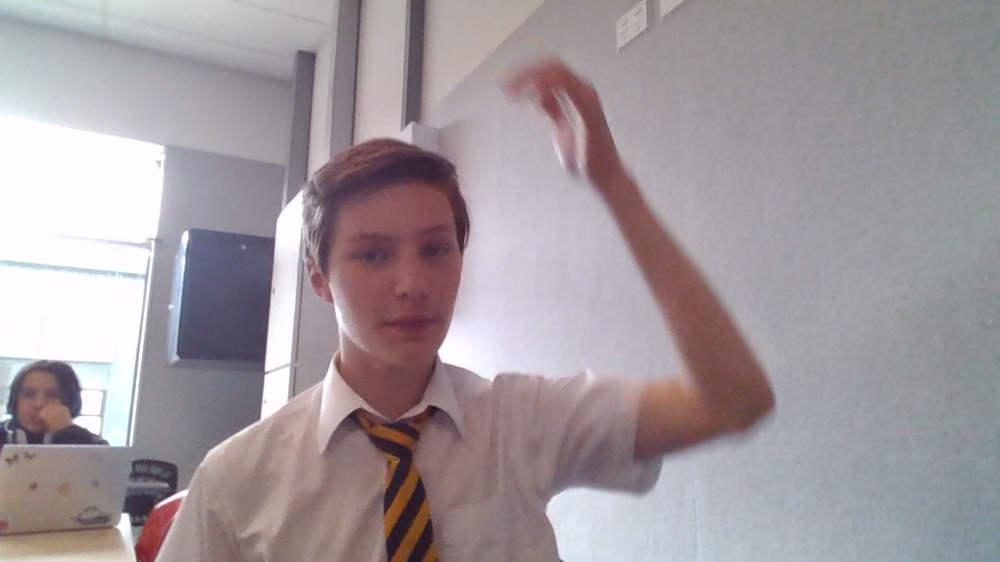

Home
Pricing
Cars
Donate!
Challenge
Challenge One
Challenge Two
Challenge Three

Button
push here you won't regret it please it would be pretty cool if you pushed this button aaaaaaaaaaaaaaaaaaAAAAAAAAAAAAAAAAAAAAAA
Help
The possibility of negative temperatures was first predicted by Lars Onsager in 1949.[1] Onsager was investigating 2D vortices confined within a finite area, and realized that since their positions are not independent degrees of freedom from their momenta, the resulting phase space must also be bounded by the finite area. Bounded phase space is the essential property that allows for negative temperatures, and can occur in both classical and quantum systems. As shown by Onsager, a system with bounded phase space necessarily has a peak in the entropy as energy is increased. For energies exceeding the value where the peak occurs, the entropy decreases as energy increases, and high-energy states necessarily have negative Boltzmann temperature.
Click
HERE
for a foot massage